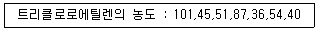
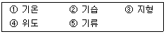
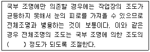
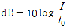
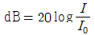
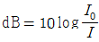
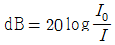
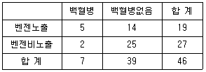
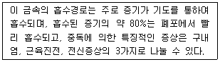

산업위생관리기사 (2012-03-04 기출문제)
1과목: 산업위생학개론
1. 신발 제조업에서 보건관리자를 1명 이상을 반드시 두어야 하는 사업장의 규모는 상시근로자가 몇 명 이상이어야 하는가?
- 30
- 50
- 100
- 300
(정답률: 67%)

2. 다음 중 18세기 영국에서 최초로 보고하였으며, 어린이 굴뚝청소부에게 많이 발생하였고, 원인물질이 검댕(soot)이라고 규명된 직업성 암은?
- 폐암
- 음낭암
- 후두암
- 피부암
(정답률: 91%)
3. 다음 중 충격소음의 강도가 130dB(A)일 때 1일 노출회수의 기준으로 옳은 것은?
- 50
- 100
- 500
- 1000
(정답률: 73%)
4. 미국산업안전보건연구원(NIOSH)의 중량물 취급작업 기준에서 적용하고 있는 들어 올리는 물체의 폭은 얼마인가?
- 55cm 이하
- 65cm 이하
- 75cm 이하
- 85cm 이하
(정답률: 77%)
5. 미국산업위생학술원(AAIH)에서 제시한 산업위생전문가의 윤리강령 중 일반 대중에 대한 책임으로 볼 수 있는 것은?
- 기업체의 기밀은 누설하지 않는다.
- 정확하고도 확실한 사실을 근거로 전문적인 견해를 발표한다.
- 쾌적한 작업환경을 만들기 위하여 산업위생의 이론을 적용하고 책임 있게 행동한다.
- 신뢰를 존중하여 정직하게 권고하고, 결과와 개선점을 정확히 보고한다.
(정답률: 34%)
6. 다음 중 육체적 작업시 혐기성 대사에 의해 생성되는 에너지의 근원에 해당하지 않는 것은?
- 아데노신 삼인산(ATP)
- 크레아틴 인산(CP)
- 산소(Oxygen)
- 포도당(Glucose)
(정답률: 81%)
7. 다음 중 실내 공기 오염의 주요원으로 볼 수 없는 것은?
- 오염원
- 공조시스템
- 이동경로
- 체온
(정답률: 83%)
8. 다음 중 영상단말기(Visual Display Terminal) 증후군을 예방하기 위한 방안으로 적절하지 않은 것은?
- 팔꿈치의 내각은 90° 이상이 되도록 한다.
- 무릎의 내각(knee angle)은 120° 전후가 되도록 한다.
- 화면상의 문자와 배경과의 휘도비(contrast)를 낮춘다.
- 디스플레이의 화면 상단이 눈높이 보다 약간 낮은 상태(약 10° 이하)가 되도록 한다.
(정답률: 60%)
9. 다음 중 산업안전보건법상 “적정공기”의 정의로 옳은 것은?
- 산소농도의 범위가 18% 이상 23.5% 미만, 탄산가스의 농도가 1.5% 미만, 황화수소의 농도가 10ppm미만인 수준의 공기를 말한다.
- 산소농도의 범위가 16% 이상 21.5% 미만, 탄산가스의 농도가 1.0% 미만, 황화수소의 농도가 15ppm미만인 수준의 공기를 말한다.
- 산소농도의 범위가 18% 이상 21.5% 미만, 탄산가스의 농도가 15% 미만, 황화수소의 농도가 1.0ppm미만인 수준의 공기를 말한다.
- 산소농도의 범위가 16% 이상 23.5% 미만, 탄산가스의 농도가 1.0% 미만, 황화수소의 농도가 1.5ppm미만인 수준의 공기를 말한다.
(정답률: 84%)
10. 한 근로자가 트리클로로에틸렌(TLV 50ppm)이 담긴 탈지 탱크에서 금속가공 제품의 표면에 존재하는 절삭유 등의 기름 성분을 제거하기 위해 탈지 작업을 수행하였다. 또 이 과정을 마치고 포장단계에서 표면 세척을 위해 아세톤(TLV 500ppm)을 사용하였다. 이 근로자의 작업환경 측정 결과는 트리클로로에틸렌이 45ppm, 아세톤이 100ppm이었을 때 노출지수와 노출 기준에 관한 설명으로 옳은 것은? (단, 두 물질은 상가작용을 한다.)
- 노출지수는 1.1이며, 노출기준을 초과하고 있다.
- 노출지수는 6.1이며, 노출기준을 초과하고 있다.
- 노출지수는 0.9이며, 노출기준 미만이다.
- 노출지수TCE는 0.9이며, 노출지수아세톤는 0.2이며, 노출기준 미만이다.
(정답률: 83%)
11. 300명이 근무하는 A 작업장에서 연간 55건의 재해발생으로 60명의 사상자가 발생하였다. 이 사업장의 연간 총근로시간수가 700000시간이었다면 도수율은 약 얼마인가?
- 32.5
- 71.4
- 78.6
- 85.7
(정답률: 79%)
12. 다음 중 피로의 예방대책으로 적절하지 않은 것은?
- 충분한 수면을 갖는다.
- 작업 환경을 정리, 정돈한다.
- 정적인 자세를 유지하는 작업을 동적인 작업으로 전환하도록 한다.
- 피로한 후 여러 번 나누어 휴식하는 것보다 장시간의 휴식을 취한다.
(정답률: 81%)
13. 근로자의 작업에 대한 적성검사 방법 중 심리학적 적성검사에 해당하지 않는 것은?
- 감각기능검사
- 지능검사
- 지각동작검사
- 인성검사
(정답률: 74%)
14. 직업병의 발생요인 중 직접요인은 크게 환경요인과 작업요인으로 구분되는데 다음 중 환경요인으로 볼 수 없는 것은?
- 진동현상
- 대기조건의 변화
- 격렬한 근육운동
- 화학물질의 취급 또는 발생
(정답률: 86%)
15. 직업병의 예방대책 중 발생원에 대한 대책으로 볼 수 없는 것은?
- 대치
- 격리 또는 밀폐
- 공정의 재설계
- 정리정돈 및 청결유지
(정답률: 71%)
16. 다음 중 산업위생학의 정의로 가정 적절한 것은?
- 근로자의 건강증진, 질병의 예방과 진료, 재활을 연구하는 학문
- 근로자의 건강과 쾌적한 작업환경을 위해 공학적으로 연구하는 학문
- 인간과 직업, 기계, 환경, 노동 등의 관계를 과학적으로 연구하는 학문
- 근로자의 건강과 간호를 연구하는 학문
(정답률: 89%)
17. 다음 중 객관적 피로의 측정방법과 가정 거리가 먼 것은?
- 피로 자각 증상 조사
- 생리적 기능검사
- 생화학적 검사
- 생리심리적 검사
(정답률: 55%)
18. 다음 중 사고예방대책의 기본 원리 5단계를 올바르게 나열한 것은?
- 사실의 발견 → 분석ㆍ평가 → 조직 → 시정방법의 선정 → 시정책의 적용
- 사실의 발견 → 시정방법의 선정 → 분석ㆍ평가 → 조직 → 시정책의 적용
- 조직 → 분석ㆍ평가 → 사실의 발견 → 시정방법의 선정 → 시정책의 적용
- 조직 → 사실의 발견 → 분석ㆍ평가 → 시정방법의 선정 → 시정책의 적용
(정답률: 86%)
19. 육체적 작업능력(PWC)이 15kcal/min인 어느 근로자가 1일 8시간 동안 물체를 운반하고 있다. 작업대사량(Etask)이 6.5kcal/min, 휴식시의 대사량(Erest)이 1.5kcal/min일 때 매 시간당 휴식시간과 작업시간의 배분으로 가장 적절한 것은? (단, Hertig의 공식을 이용한다.)
- 12분 휴식, 48분 작업
- 18분 휴식, 42분 작업
- 24분 휴식, 36분 작업
- 30분 휴식, 30분 작업
(정답률: 77%)
20. 다음 중 사무실의 공기관리 지침의 관리대상 오염물질이 아닌 것은?(2020년 01월 개정된 규정 적용됨)
- 질소(N2)
- 미세먼지(PM10)
- 총부유세균
- 라돈
(정답률: 64%)
2과목: 작업위생측정 및 평가
21. 어느 작업장에 작동되는 기계 두 대의 소음레벨이 각각 98dB, 96dB로 측정되었다. 두 대의 기계가 동시에 작동되었을 경우에 소음레벨은?
- 98dB
- 100dB
- 102dB
- 104dB
(정답률: 75%)
22. 여과지에 관한 설명으로 옳지 않은 것은?
- 막여과지에서 유해물질은 여과지 표면이나 그 근처에서 채취된다.
- 막여과지는 섬유상 여과지에 비해 공기저항이 심하다.
- 막여과지는 여과지 표면에 채취된 입자의 이탈이 없다.
- 섬유상 여과지는 여과지 표면뿐 아니라 단면 깊게 입자상 물질이 들어가므로 더 많은 입자상 물질을 채취할 수 있다.
(정답률: 64%)
23. 가스상 물질 흡수액의 흡수효율을 높이기 위한 방법으로 옳지 않은 것은?
- 가는 구멍이 많은 프리티드버블러 등 채취효율이 좋은 기구를 사용한다.
- 시료채취속도를 낮춘다.
- 용액의 온도를 높여 증기압을 증가시킨다.
- 두 개 이상의 버블러를 연속적으로 연결한다.
(정답률: 69%)
24. 작업장 내 기류측정에 대한 설명으로 옳지 않은 것은?
- 풍차풍속계는 풍차의 회전속도로 풍속을 측정한다.
- 풍차풍속계는 봉통 1~150m/sec 범위의 풍속을 측정하며 옥외용이다.
- 기류속도가 아주 낮을 때에는 카타온도계와 복사풍속계를 사용하는 것이 정확하다.
- 카타온도계는 기류의 방향이 일정하지 않던가, 실내 0.2~⑤.m/s 정도의 불감기류를 측정할 때 사용한다.
(정답률: 58%)
25. 소음측정 시 단위작업장소에서 소음발생시간이 6시간 이내인 경우나 소음발생원에서의 발생시간이 간헐적인 경우의 측정시간 및 횟수 기준으로 옳은 것은?(단, 고시 기준)
- 발생시간동안 연속 측정하거나 등 간격으로 나누어 2회 이상 측정하여야 한다.
- 발생시간동안 연속 측정하거나 등 간격으로 나누어 4회 이상 측정하여야 한다.
- 발생시간동안 연속 측정하거나 등 간격으로 나누어 6회 이상 측정하여야 한다.
- 발생시간동안 연속 측정하거나 등 간격으로 나누어 8회 이상 측정하여야 한다.
(정답률: 79%)
26. 0.01M-NaOH 용액의 농도는? (단, Na 원자량 : 23)
- 40mg/L
- 100mg/L
- 400mg/L
- 1000mg/L
(정답률: 47%)
27. 화학시험의 일반사항 중 시약 및 표준물질에 관한 설명으로 옳지 않은 것은? (단, 고시 기준)
- 분석에 사용하는 시약은 따로 규정이 없는 한 특급 또는 1급 이상이거나 이와 동등한 규격의 것을 사용하여야 한다.
- 분석에 사용되는 표준품은 원칙적으로 1급 이상이거나 이와 동등한 규격의 것을 사용하여야 한다.
- 시료의 시험, 바탕시험 및 표준액에 대한 시험을 일련의 동일시험으로 행할 때에 사용하는 약 또는 시액은 동일 로트로 조제된 것을 사용한다.
- 분석에 사용하는 시약 중 단순히 염산으로 표시하였을 때는 농도 35.0 ~ 37.0%(비중(약)은 1.18) 이상의 것을 말한다.
(정답률: 58%)
28. 흡착을 위해 사용하는 활성탄관의 흡착 양상에 대한 설명으로 옳지 않은 것은?
- 끓는 점이 낮은 암모니아 증기는 흡착속도가 높지않다.
- 끓는점이 높은 에틸렌, 포름알데하이드 증기는 흡착속도가 높다.
- 메탄, 일산화탄소 같은 가스는 흡착되지 않는다.
- 유기용제증기, 수은증기(이는 활성탄-요오드 관에 흡착됨)같이 상대적으로 무거운 증기는 잘 흡착된다.
(정답률: 38%)
29. 톨루엔 취급 작업장에서 활성탄관을 사용하여 작업장 내 톨루엔 농도를 측정하고자 한다. 총 공기채취량은 72ℓ였으며 활성탄관의 앞 층에서 분석된 톨루엔의 양은 900㎍, 뒷 층에서 분석된 톨루엔의 양은 100㎍ 이었고 공시료에서는 앞층과 뒷층 모두 톨루엔이 검출되지 않았다. 탈착효율이 80% 라면 작업장내 톨루엔 농도는? (단, 작업장 온도 25℃, 1기압, 톨루엔 분자량 92)
- 약 2.1ppm
- 약 3.3ppm
- 약 4.6ppm
- 약 5.9ppm
(정답률: 40%)
30. 다음 물질 중 실리카켈과 친화력이 가장 큰 것은?
- 알데하이드류
- 올레핀류
- 파라핀류
- 에스테르류
(정답률: 69%)
31. 검지관의 장ㆍ단점에 관한 내용으로 옳지 않은 것은?
- 사용이 간편하고 복잡한 분석실 분석이 필요 없다.
- 맨홀, 밀폐 공간 등 산소결핍이나 폭발성가스로 인한 위험이 있는 경우 사용이 가능하다.
- 민감도 및 특이도가 낮고 색변화가 선명하지 않아 판독자에 따라 변이가 심하다.
- 측정대상물질의 동정이 미리 되어 있지 않아도 측정을 용이하게 할 수 있다.
(정답률: 85%)
32. 불꽃방식의 원자흡광광도계의 장ㆍ단점으로 옳지 않은 것은?
- 조작이 쉽고 간편하다.
- 분석시간이 흑연로장치에 비하여 적게 소요된다.
- 주입 시료액의 대부분이 불꽃부분으로 보내지므로 감도가 높다.
- 고체 시료의 경우 전처리에 의하여 매트릭스를 제거해야 한다.
(정답률: 38%)
33. 입자상 물질의 채취를 위한 직경분립충돌기의 장점으로 옳지 않은 것은?
- 입자별 동시 채취로 시료채취준비 및 채취시간을 단축할 수 있다.
- 흡입성, 흉곽성, 호흡성 입자의 크기별로 분포와 농도를 계산할 수 있다.
- 호흡기의 부분별로 침착된 입자크기의 자료를 추정할 수 있다.
- 입자의 질량크기분포를 얻을 수 있다.
(정답률: 70%)
34. 공기채취기구의 보정에 사용되는 2차 표준(secondary standard)으로 옳은 것은?
- 흑연 피스톤 미터
- 폐활량계
- 가스 치환병
- 열선기류계
(정답률: 77%)
35. 작업환경측정, 분석치에 대한 정확도와 정밀도를 확보하기 위하여 지정측정기관의 작업환경측정ㆍ분석능력을 평가하고, 그 결과에 따라 지도 및 교육 기타 측정, 분석능력 향상을 위하여 행하는 모든 관리적 수단을 말하는 것은?
- 분석관리
- 평가관리
- 측정관리
- 정도관리
(정답률: 61%)
36. 처음 측정한 측정치는 유량, 측정시간, 회수율 및 분석 등에 의한 오차가 각각 15%, 3%, 9%, 5% 였으나 유량에 의한 오차가 개선되어 10% 로 감소되었다면 개선 전 측정치의 누적오차와 개선후의 측정치의 누적오차의 차이(%)는?
- 6.6%
- 5.6%
- 4.6%
- 3.8%
(정답률: 68%)
37. 입자상 물질의 측정에 관한 설명으로 옳지 않은 것은? (단, 고시 기준)
- 석면의 농도는 여과채취방법에 의한 계수방법 또는 이와 동등 이상의 분석방법으로 측정한다.
- 광물성 분진은 여과채취방법에 따라 석영, 크리스토바라이트, 트리디마이트를 분석할 수 있는 적합한 분석방법으로 측정한다.
- 용접흄은 여과채취방법으로 하되 용접 보안면을 착용한 경우는 호흡기로부터 반경 30cm 이내에서 측정한다.
- 호흡성분진은 호흡성 분진용 분립장치 또는 호흡성분진을 채취할 수 있는 기기를 이용한 여과채취방법으로 측정한다.
(정답률: 55%)
38. 측정값이 17, 5, 3, 13, 8, 7, 12 및 10일 때 통계적인 대표값 9.0은 다음 중 어느 통계치에 해당 되는가?
- 산술평균
- 기하평균
- 최빈값
- 중앙값
(정답률: 73%)
39. 가스크로마토그래피의 검출기 종류인 전자포회검출기에 관한 설명으로 옳지 않은 것은?
- 할로겐, 과산화물, 퀴논, 니트로기와 같은 전기 음성도가 큰 작용기에 대하여 대단히 예민하게 반응한다.
- 아민, 알콜류, 탄화수소와 같은 화합물에 감응하여 높은 선택성을 나타낸다.
- 검출한계는 약 50pg 정도이다.
- 염소를 함유한 농약의 검출에 널리 사용된다.
(정답률: 38%)
40. 금속탈지 공정에서 측정한 트리클로로에틸렌의 농도(ppm)가 다음과 같다면 기하평균 농도(ppm)는?

- 53.2
- 55.2
- 57.2
- 59.2
(정답률: 72%)
3과목: 작업환경관리대책
41. 플렌지가 붙은 외부식 후드가 공간에 있다. 만약 제어속도가 0.75m/sec, 단면적이 0.5m2 이고 대상물질과 후드면간의 거리가 1.0m 라면 필요 송풍량은?
- 약 4 m3/sec
- 약 6 m3/sec
- 약 8 m3/sec
- 약 10 m3/sec
(정답률: 42%)
42. 여과 집진 장치의 장단점으로 옳지 않은 것은?
- 다양한 용량을 처리할 수 있다.
- 탈진방법과 여과재의 사용에 따른 설계상의 융통성이 있다.
- 섬유 여포상에서 응축이 일어날 때 습한 가스를 취급할 수 없다.
- 집진효율이 처리가스의 양과 밀도 변화에 영향이 크다.
(정답률: 37%)
43. 80㎛인 분진 입자를 중력 침강실에서 처리하려고 한다. 입자의 밀도는 2g/cm3, 가스의 밀도는 1.2kg/m3, 가스의 점성계수는 2.0×10-3g/cmㆍs 일 때 침강속도는? (단, Stokes's 식 적용)
- 3.49×10-3m/sec
- 3.49×10-2m/sec
- 4.49×10-3m/sec
- 4.49×10-2m/sec
(정답률: 43%)
44. 환기시설의 내 기류가 기본적인 유체역학적 원리에 따르기 위한 전제조건과 가장 거리가 먼 것은?
- 환기시설 내외의 열교환은 무시한다.
- 공기의 압축이나 팽창은 무시한다.
- 공기는 절대습도를 기준으로 한다.
- 대부분의 환기시설에서 공기 중에 포함된 유해 물질의 무게와 용량을 무시한다.
(정답률: 66%)
45. 어느 관내의 속도압이 3.5mmH2O 일 때 유속(m/min)은? (단, 공기의 밀도 1.21 kg/m3)
- 352
- 381
- 415
- 452
(정답률: 50%)
46. 탈지제로 사용되는 유기용제인 사염화에틸렌 20000ppm이 공기 중에 존재한다면 사염화에틸렌 혼합물의 유효비중은? (단, 사염화에틸렌 증기 비중 : 5.7)
- 1.021
- 1.047
- 1.094
- 1.126
(정답률: 69%)
47. 분압이 5mmHg인 물질이 표준상태의 공기 중에서 증발하여 도달할 수 있는 최고 농도(포화농도 , ppm)는?
- 약 4520
- 약 5590
- 약 6580
- 약 7530
(정답률: 72%)
48. 강제환기를 실시할 때 따라야 하는 원칙으로 옳지 않은 것은?
- 배출공기를 보충하기 위하여 청정공기를 공급한다.
- 공기배출구와 근로자의 작업위치 사이에 오염원이 위치하지 않도록 한다.
- 오염물질 배출구는 가능한 한 오염원으로부터 가까운 곳에 설치하여 점 환기의 효과를 얻는다.
- 공기가 배출되면서 오염장소를 통과하도록 공기 배출구와 유입구의 위치를 선정한다.
(정답률: 77%)
49. 어떤 작업장의 음압수준이 100dB(A)이고 근로자가 NRR이 19인 귀마개를 착용하고 있다면 차음효과는? (단, OSHA 방법 기준)
- 2dB(A)
- 4dB(A)
- 6dB(A)
- 8dB(A)
(정답률: 75%)
50. 세정집진 장치의 효율을 향상시키기 위한 방안으로 옳지 않은 것은?
- 충진탑은 공탑 내의 배기속도를 크게 한다.
- 체류시간을 길게 한다.
- 분무되는 물방울의 입경을 작게 한다.
- 충진제의 표면적과 충진 밀도를 크게 한다.
(정답률: 49%)
51. 보호 장구의 재질과 효과적으로 적용할 수 있는 화학물질을 짝지은 것으로 옳지 않은 것은?
- 부틸고무 - 극성용제
- 면 - 고체상 물질
- 천연고무(latex) - 수용성 용액
- Viton - 극성용제
(정답률: 63%)
52. 작업환경개선을 위한 물질의 대치로 옳지 않은 것은?
- 주물공정에서 실리카모래 대신 그린모래로 주형을 채우도록 대치
- 보온재로 석면 대신 유리섬유나 암면 등 사용
- 금속표면을 블라스팅할 때 사용재료를 철구슬(shot) 대신 모래(sand) 사용
- 야광시계의 자판을 라듐 대신 인을 사용
(정답률: 80%)
53. 높이가 3.3m인 곳에서 비중이 2.0, 입경이 10㎛인 분진 입자가 발생하였다. 신장이 170cm인 작업자의 호흡영역은 바닥으로부터 대략 150cm로 본다. 이 분진입자가 작업자의 호흡영역까지 다가오는 시간은 대략 몇 분이 소요되겠는가?
- 2분
- 5분
- 8분
- 11분
(정답률: 48%)
54. 움직이지 않는 공기 중으로 속도 없이 배출되는 작업조건(작업공정 : 탱크에서 증발)의 제어속도 범위로 가장 적절한 것은? (단, ACGIH 권고 기준)
- 0.1~0.3 m/s
- 0.3~0.5 m/s
- 0.5~1.0 m/s
- 1.0~1.5 m/s
(정답률: 58%)
55. 방진마스크에 관한 설명으로 옳지 않은 것은?
- 일반적으로 활성탄 필터가 많이 사용된다.
- 종류에는 격리식, 직결식, 면체여과식이 있다.
- 흡기저항 상승률은 낮은 것이 좋다.
- 비휘발성 입자에 대한 보호가 가능하다.
(정답률: 71%)
56. 어떤 단순후드의 유입계수가 0.90 이고 속도압이 20mmH2O 일 때 후드의 후드정압은?
- -24.6 mmH2O
- -36.4 mmH2O
- -42.2 mmH2O
- -52.2 mmH2O
(정답률: 55%)
57. 도금조와 같이 오염물질 발생원의 개방면적이 큰 작업공정에 주로 많이 사용하여 포집효율을 증가시키면서 필요유량을 대폭 감소시킬 수 있는 장점이 있는 후드는?
- 그리드형
- 캐노피형
- 드래프트 챔버형
- 푸쉬-풀형
(정답률: 72%)
58. 확대각이 10°인 원형 확대관에서 입구직관의 정압은 -15mmH2O, 속도압은 35mmH2O 이고, 확대된 출구직관의 속도압은 25mmH2O 이다. 확대측의 정압은? (단, 확대각이 10°일 때 압력손실계수 ζ=0.28 이다)
- - 1.4 mmH2O
- - 2.8 mmH2O
- - 5.4 mmH2O
- - 7.8 mmH2O
(정답률: 29%)
59. 직경이 400mm인 환기시설을 통해서 50m3/min의 표준상태의 공기를 보낼 때 이 덕트 내의 유속(m/sec)은?
- 13.3 m/sec
- 11.5 m/sec
- 9.4 m/sec
- 6.6 m/sec
(정답률: 58%)
60. 전체 환기를 하는 경우와 가장 거리가 먼 것은?
- 유해물질의 독성이 높은 경우
- 동일 사업장에 다수의 오염발생원이 분산되어 있는 경우
- 오염발생원이 근로자가 근무하는 장소로부터 멀리 떨어져 있는 경우
- 오염발생원이 이동성인 경우
(정답률: 67%)
4과목: 물리적유해인자관리
61. 1촉광의 광원으로부터 한 단위 입체각으로 나가는 공속의 단위를 무엇이라 하는가?
- 럭스(Lux)
- 램버트(Lambert)
- 캔들(Candle)
- 루멘(Lumen)
(정답률: 61%)
62. 소음의 흡음 평가시 적용되는 잔향시간(Reverberration time)에 관한 설명으로 옳은 것은?
- 잔향시간은 실내공간의 크기에 비례한다.
- 실내 흡음량을 증가시키면 잔향시간도 증가한 다.
- 잔향시간은 음압수준이 30dB 감소하는데 소요되는 시간이다.
- 잔향시간을 측정하려면 실내 배경소음이 90dB 이상 되어야 한다.
(정답률: 70%)
63. 0℃ , 1기압의 공기 중에서 파장이 2m인 음의 주파수는 약 얼마인가?
- 132㎐
- 154㎐
- 166㎐
- 178㎐
(정답률: 40%)
64. 다음 중 일반적으로 전리방사선에 대한 감수성이 가장 둔감한 것은?
- 세포핵 분열이 계속적인 조직
- 증식력과 재생기전이 왕성한 조직
- 신경조직, 근육 등 조밀한 조직
- 형태와 기능이 미완성된 조직
(정답률: 61%)
65. 다음 중 한냉 환경에서의 생리적 반응이 아닌 것은?
- 피부혈관의 수축
- 근육 긴장의 증가와 떨림
- 화학적 대사작용의 증가
- 체표면적의 증가
(정답률: 74%)
66. 다음 보기 중 온열요소를 결정하는 주요 인자들로만 나열된 것은?

- ①, ②, ③
- ②, ③, ④
- ③, ④, ⑤
- ①, ②, ⑤
(정답률: 81%)
67. 다음 중 진동의 강도를 표현하는 방법으로 적절하지 않은 것은?
- 투과(transmission)
- 변위(displacement)
- 속도(velocity)
- 가속도(acceleration)
(정답률: 66%)
68. 다음 중 산소결핍이라 함은 공기 중의 산소농도가 몇 % 미만인 상태를 말하는가?
- 16%
- 18%
- 21%
- 23.5%
(정답률: 80%)
69. 다음 중 ( )안에 내용으로 가장 적절한 것은?

- 1/10 ~ 1/5
- 1/20 ~ 1/10
- 1/30 ~ 1/20
- 1/50 ~ 1/ 30
(정답률: 69%)
70. 개인의 평균 청력 손실을 평가하는 6분법이다. 500㎐에서 6dB, 1000㎐에서 10dB, 2000㎐에서 10dB, 4000㎐에서 20dB일 때 청력손실은 얼마인가?
- 10dB
- 11dB
- 12dB
- 13dB
(정답률: 65%)
71. 원자핵 전환 또는 원자핵 붕괴에 따라 방출되는 자연 발생적인 전리방사선이며 투과력이 커서 인체를 통과할 수 있다. 특히 외부 조사에 문제가 되는 방사선의 종류는?
- X선
- γ선
- 자외선
- α선
(정답률: 55%)
72. 다음 중 감압병 예방을 위한 이상기압 환경에 대한 대책으로 적절하지 않은 것은?
- 가급적 빨리 감압시킨다.
- 작업시간을 제한한다.
- 고압환경에서 작업시 헬륨-산소혼합가스로 대체하여 이용한다.
- 순환기에 이상이 있는 사람은 취업 또는 작업을 제한한다.
(정답률: 78%)
73. 다음 중 마이크로파와 라디오파에 관한 설명으로 틀린 것은?
- 마이크로파의 주파수는 10 ~ 10000㎒ 정도이며, 지역에 따라 범위의 규정이 각각 다르다.
- 라디오파의 파장은 1㎒와 자외선 사이의 범위를 말한다.
- 마이크로파와 라디오파의 생체작용 중 대표적인 것은 온감을 느끼는 열작용이다.
- 마이크로파의 생물학적 작용은 파장 뿐만 아니라 출력, 노출시간, 노출된 조직에 따라 다르다.
(정답률: 39%)
74. 다음 중 고압 환경의 생체작용과 가장 거리가 먼 것은?
- 귀, 부비강, 치아의 압통
- 이산화탄소(CO2) 중독
- 손가락과 발가락의 작열통과 같은 산소 중독
- 진해성 기침과 호흡곤란, 폐수종
(정답률: 70%)
75. 다음 중 잠함병(감압병)의 직접적인 원인으로 옳은 것은?
- 혈중의 CO2농도 증가
- 체액 및 지방조직에 질소기포 증가
- 체액 및 지방조직에 O3농도 증가
- 체액 및 지방조직에 CO 농도 증가
(정답률: 72%)
76. 다음 중 소음의 크기를 나타내는데 사용되는 단위로서 음향출력, 음의 세기 및 음압 등의 양을 비교하는 무차원의 단위인 dB을 나타낸 것은? (단, I0 = 기준음향의 세기, I = 발생음의 세기를 나타낸다.)




(정답률: 65%)
77. 다음 중 자외선의 작용에 대한 설명으로 옳은 것은?
- 320nm 이상에서 강한 홍반작용을 보인다.
- TCE를 산화성이 강한 염화수소로 전환한다.
- 280 ~ 320nm의 파장은 비타민 D 형성, 소독작용 등의 효과가 있다.
- 태양자외선과 산업장에서 발생하는 자외선은 공기중의 SO2와 paraffin계 탄화수소와 광화학적 반응을 일으켜 오존과 산화성물질을 발생시킨다.
(정답률: 63%)
78. 어떤 환경에서 8시간 작업 중 95dB(A)인 단속음의 소음이 3시간, 90dB(A)의 소음이 3시간 발생하고 그 외 2시간은 기준 이하의 소음이 발생되었을 경우에 이 환경에서의 허용기준에 관한 설명으로 옳은 것은?
- 1.125로 허용기준을 초과하였다.
- 1.50으로 허용기준을 초과하였다.
- 0.76로 허용기준 이하였다.
- 0.50으로 허용기준 이하였다.
(정답률: 66%)
79. 고온다습한 작업환경 혹은 강력한 복사열에 노출되어 있는 상태에서 격심한 육체 운동을 할 때 발생하는 이상 상태로서 체온조절 중추기능에 이상이 생겨 체온이 41 ~ 43℃까지 급격하게 상승하여 사망하기도 하는 질병은?
- 열쇠약
- 열경련
- 열피로
- 열사병
(정답률: 74%)
80. 손가락의 말초혈관운동의 장애로 인한 혈액순환장애로 손가락의 감각이 마비되고, 창백해지며, 추운 환경에서 더욱 심해지는 레이노(Raynaud) 현상의 주요원으로 옳은 것은?
- 진동
- 소음
- 조명
- 기압
(정답률: 82%)
5과목: 산업독성학
81. 다음 중 알데히드류에 관한 설명으로 틀린 것은?
- 호흡기에 대한 자극작용이 심한 것이 특징이다.
- 포름알데히드는 무취, 무미하며 발암성이 있다.
- 지용성 알데히드는 기관지 및 폐를 자극한다.
- 아크롤레인은 특별히 독성이 강하다고 할 수 있다.
(정답률: 60%)
82. 다음 중 유기용제의 중추신경계에 대한 일반적인 독성 작용의 원리로 틀린 것은?
- 불포화화합물은 포화화합물보다 더욱 강력한 중추신경억제물질이다.
- 탄소사슬길이가 길수록 유기화학물질의 중추신경억제효과는 증가한다.
- 탄소사슬길이가 증가혐 수용성도 증가하고 지용성이 감소하여 체내조직에 폭넓게 분포할 수 있다.
- 유기분자의 중추신경 억제특성은 할로겐화하면 크게 증가하고 알코올 작용기에 의하여 다소 증가한다.
(정답률: 50%)
83. 산업역학에서 상대위험도의 값이 1 인 경우가 의미하는 것으로 옳은 것은?
- 노출과 질병발생 사이에는 연관이 없다.
- 노출되면 위험하다.
- 노출되면 질병에 대하여 방어효과가 있다.
- 노출되어서는 절대 안 된다.
(정답률: 71%)
84. 화학적 질식제(chemical asphyxiant)에 심하게 노출되었을 경우 사망에 이르게 되는 이유로 가장 적절한 것은?
- 폐에서 산소를 제거하기 때문
- 심장의 기능을 저하시키기 때문
- 폐속으로 들어가는 산소의 활용을 방해하기 때문
- 신진대사 기능을 높여 가용한 산소가 부족해지기 때문
(정답률: 77%)
85. 다음 중 비강암, 비중격천공 등을 일으키는 중금속은?
- 수은
- 카드뮴
- 납
- 크롬
(정답률: 70%)
86. 접촉에 의한 알레르기성 피부감작을 증명하기 위한 시험으로 가장 적절한 것은?
- 첩포시험
- 진균시험
- 조직시험
- 유발시험
(정답률: 76%)
87. 다음 표는 A 작업장의 백혈병과 벤젠에 대한 코호트연구를 수행한 결과이다. 이 때 벤젠의 백혈병에 대한 상대위험비는 약 얼마인가?

- 3.29
- 3.55
- 4.64
- 4.82
(정답률: 68%)
88. 단시간 노출기준(STEL)은 근로자가 1회 얼마 동안 유해인자에 노출되는 경우의 기준을 말하는가?
- 5분
- 10분
- 15분
- 30분
(정답률: 77%)
89. 다음 중 생물학적 노출지표에 관한 설명으로 틀린것은?
- 노출근로자의 호기, 요, 혈액, 기타 생체시료로 분석하게 된다.
- 직업성질환의 진단이나 중독 정도를 평가하게 된다.
- 유해물의 전반적인 노출량을 추정할 수 있다.
- 현 환경이 잠재적으로 갖고 있는 건강장해 위험을 결정하는 데에 지침으로 이용된다.
(정답률: 37%)
90. 화학물질을 투여한 실험동물의 50%가 관찰 가능한 가역적인 반응을 나타내는 양을 의미하는 것은?
- LC50
- LE50
- TE50
- ED50
(정답률: 67%)
91. 다음 중 진폐증의 독성병리기전을 설명한 것으로 틀린 것은?
- 폐포 탐식세포는 분진탐식 과정에서 활성산소 유리기에 의한 폐포 상피세포의 증식을 유도한다.
- 진폐증의 대표적인 병리소견은 섬유증(fibrosis)이다.
- 콜라겐 섬유가 증식하면 폐의 탄력성이 떨어져 호흡곤란, 지속적인 기침, 폐기능 저하를 가져온다.
- 섬유증이 동반되는 진폐증의 원인물질로는 석면, 알루미늄, 베릴륨, 석탄분진, 실리카 등이 있다.
(정답률: 41%)
92. 다음 중 작업환경 내의 유해 물질과 그로 인한 대표적인 장애를 잘못 연결한 것은?
- 이황화탄소 - 생식기능 장애
- 염화비닐 - 간 장애
- 벤젠 - 시신경 장애
- 톨루엔 - 중추신경계 억제
(정답률: 65%)
93. 공기 중 입자상 물질의 호흡기계 축적기전에 해당하지 않는 것은?
- 교환
- 충돌
- 침전
- 확산
(정답률: 73%)
94. 다음 중 금속의 일반적인 독성기전으로 틀린 것은?
- DNA 염기의 대체
- 금속 평형의 파괴
- 필수 금속성분의 대체
- 술피드립(sulfhydryl)기와의 친화성으로 단백질 기능 변화
(정답률: 47%)
95. 무기성 납으로 인한 중독시 원활한 체내 배출을 위해 사용하는 배설촉진제는?
- Ca-EDTA
- δ-ALAD
- β-BAL
- 코프로폴피린
(정답률: 74%)
96. 다음 중 유해물질이 인체에 미치는 영향을 결정하는 인자와 가장 거리가 먼 것은?
- 유해물질의 농도
- 유해물질의 노출시간
- 유해물질의 독립성
- 개인의 감수성
(정답률: 80%)
97. 다음 설명에 해당하는 금속은?(오류 신고가 접수된 문제입니다. 반드시 정답과 해설을 확인하시기 바랍니다.)

- Be
- As
- Hg
- Mn
(정답률: 73%)
98. 길항작용 중 독성물질의 생체과정인 흡수, 분포, 배설 등의 변화를 일으켜 독성이 낮아지는 작용을 무엇이라 하는가?
- 기능적 길항작용
- 화학적 길항작용
- 수용체 길항작용
- 배분적 길항작용
(정답률: 75%)
99. 다음 중 유해화학물질이 체내에서 해독되는데 가장 중요한 작용을 하는 것은?
- 효소
- 임파구
- 적혈구
- 체표온도
(정답률: 81%)
100. 입자상 물질의 하나인 흄(fume)의 발생기전 3단계에 해당하지 않는 것은?
- 입자화
- 증기화
- 산화
- 응축
(정답률: 59%)